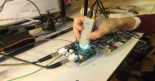

Intro
I am performance-oriented engineer with a substantial technology background and business proficiency.
I graduated from Michigan State University with a Bachelor of Science in Electrical Engineering and a Minor in Mathematics.
WI have experience in the IT industry and use my technical background to address business
challenges and create a positive impact. My overall career goal is to improve people's quality of
life through the use of technology. I believe this goal can best be achieved by helping them find
and use information effectively, and through interdisciplinary and collaborative projects.
My areas of interest include RF Eletronics, Embedded Cyber-Physical Systems, Web design, and Software
Defined Radio. In my spare
time I enjoy hiking, fishing, building/fixing stuff, playing soccer, and laughing at poorly
written television (think Trailer Park Boys and href="https://en.wikipedia.org/wiki/People_Just_Do_Nothing">People Just Do Nothing a).
Work

Summary: Design, building and characterization of a differential amplifier circuit for use
as a
differential
oscilloscope probe which performs with a reasonably flat gain over a wide
bandwidth, high input impedance, relatively large differential input range, BNC connector output
to interface to an oscilloscope .... learn
more
Sponsor: Faculty for Rare Isotope Beams, East Lansing, USA
Duration: 07/2019 - 12/2019
Resources

Misc
Quotes
Miscellaneous quotes that I like or find meaning
Knowledge vs. Truth
“Above all, don't lie to yourself. The man who lies to himself and listens to his own lie
comes to a point that he cannot distinguish the truth within him, or around him, and thus loses all
respect for himself and for others. And having no respect he ceases to love.”~ Fyodor Dostoevsky,
The Brothers Karamazov
Resilience
“Things don't necessary happen for the best, however, we can learn to make the best of
things that happen” ~ Tal Ben-Shahar
Get in touch